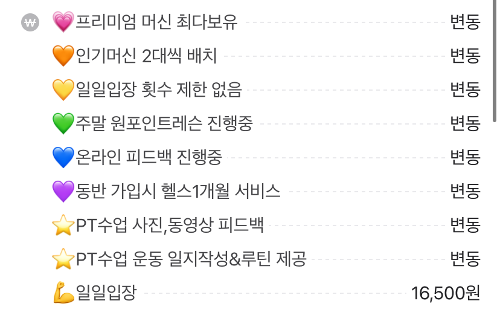

주제

헬스 관련 커뮤니티
주제 선정 이유
네이버의 헬스장을 검색해보면 투명하게 가격을 공개하고있지 않은 경우가 많아 원하는 정보를 받아오기 힘들다
각종 운동용품 및 식품들의 정보를 알고싶으면 블로그들을 돌아다니며
포스팅들을 기준으로 제품을 선정해야하는데 그 중 광고로 진행되는 포스팅에 경우도 많아
포스팅과 실제 제품에 차이가 있었던 경험이 있다.
PT를 하지않는 이상 본인에게 맞는 운동법을 찾기 쉽지않고 질의응답이 가능한 공간이 없어 궁금증 해소가 힘들다
서비스
어떤 서비스를 구현할것인가?
헬스인만을 위한 공간
우리집 주변 헬스장 위치,가격,정보 등을 투명하게 보여준다.
리뷰 공간을 만들어 사용자들이 정보를 공유할수 있는 공간을 만들고 리뷰를 좋아요 하는 방식으로 정확성을 확보한다.
같이 운동할 사람을 모집할수있도록 커뮤니케이션적 기능을 도입한다.
영상을 올려 방법을 알려주거나 자세가 맞는지 확인받는등에 차별화 된 컨텐츠 확보
인스타그램은 타겟층이 다양하기에 사진을 올리기 꺼려하는 경우가 있다 그렇기에 헬스인들만 모인 공간에 인스타그램처럼 사진을 올릴수 있다면 거부감이 덜할것이다. 또한 본인 인스타그램를 기재할수 있게 하여 사용도를 넓힌다.
타겟
누구를 위한 서비스인가?
남녀노소 가리지 않는 타겟층
주 타겟층은 20~30대 남성이지만 남녀노소 가리지않고 헬스를 즐기기에 타겟층 면에서 포괄적이라고 볼수있고
나아가 필라테스,스피닝,크로스핏 등등 범위를 넓히면 타겟층은 더 다양해질것이라고 확신한다.
또한 운동을 시작했지만 얼마 못가 그만두는 사례를 어렵지않게 볼수있다.
이유들은 "혼자 운동하니 의지가 안생긴다" , "PT를 하자니 너무 비싸고 안하자니 운동방법을 몰라 재미를 못느꼇다"
등이 대다수에 이유라고 생각하기에 헬린이들을 타겟으로 잡을수 있고
헬스를 하는 이유를 꼽았을때 미적 과시가 제일 큰 차지를 할것으로 예상된다. 그렇기에 헬창들도 타겟이 되기 충분하다.
차별성
차별화된 핵심 기능은 무엇일까?
커뮤니티를 중심으로 기획된 서비스
현존하는 웹사이트가 없어 다짐이라는 어플과 비교했을때